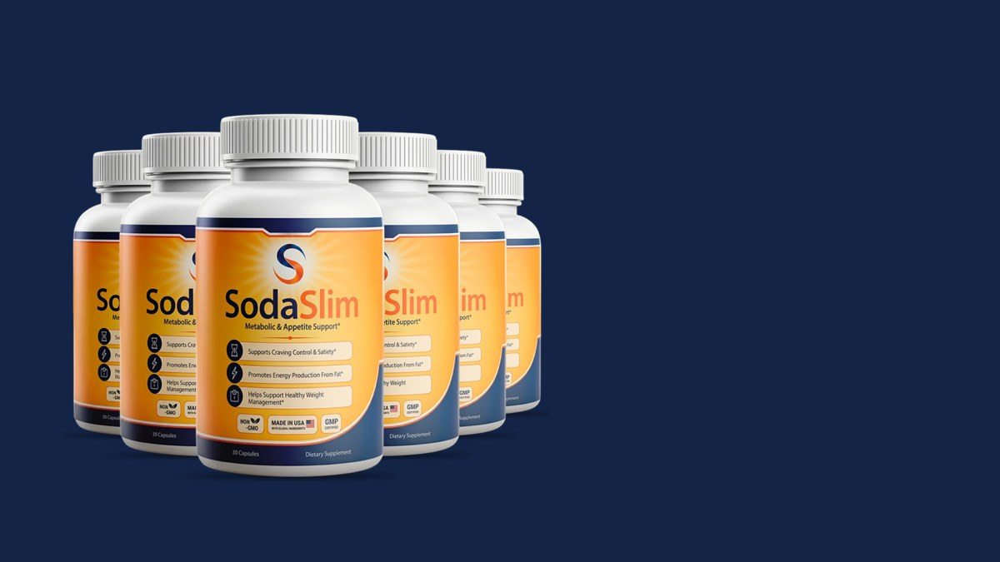
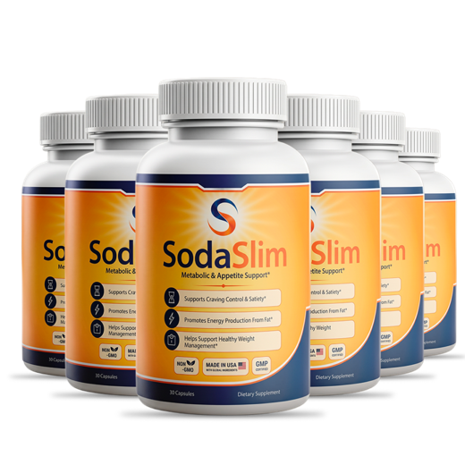
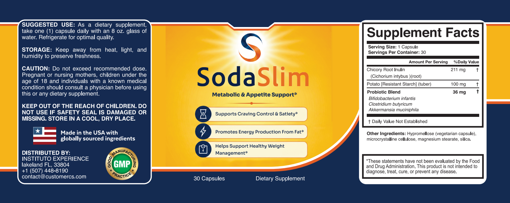
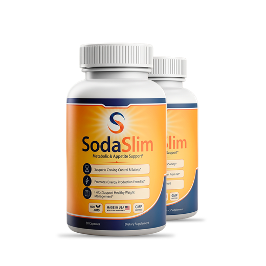
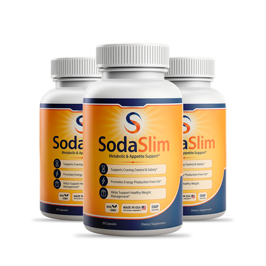

SodaSlim Review: What's in Soda Slim and Is It Worth It?
A once-a-day capsule with two prebiotic fibers and a three-strain probiotic blend. Every amount is printed. Some of them are very small, and that's the part most SodaSlim reviews skip.

Key takeaways
- SodaSlim is a fiber and probiotic capsule, not a soda and not a stimulant. One capsule a day, 30 per bottle.
- The label is open: chicory root inulin 211 mg, potato resistant starch 100 mg and a 36 mg probiotic blend with B. infantis, C. butyricum and Akkermansia muciniphila.
- The fiber doses are small. Satiety studies on inulin use grams per day, so 311 mg of total fiber is a fraction of the researched range.
- Akkermansia is the interesting part, but the human evidence is early: one small proof-of-concept trial, using a pasteurized form, in a few dozen adults.
- It won't replace diet and activity. Think of it as a gut-support add-on, priced at roughly $1.63 to $2.80 a day depending on the pack.
SodaSlim is a once-daily capsule combining 311 mg of prebiotic fiber with a 36 mg probiotic blend that includes Akkermansia muciniphila. The label is fully transparent, which is rare. The doses, though, sit well below what fiber studies use, and Akkermansia's human evidence is early. It can support a healthy routine; it won't cause weight loss on its own.
That's the short answer most people searching for SodaSlim reviews want. The longer one is worth reading if you're about to spend money, because a capsule like this lives or dies on three things: what's actually in it, how much of each ingredient you get, and whether any of it has been tested in people. We'll go through all three.
We don't sell SodaSlim ourselves. We read the Supplement Facts panel from the bottle, compared it with published research, and did the cost math. If you'd rather jump to the evidence question alone, our companion piece on whether SodaSlim works for appetite and weight goes deeper on the studies.

SodaSlim: check today's price
Prebiotic fibers plus a probiotic blend with Akkermansia. One capsule a day, label fully printed. Sold only on the official site, with a 60-day money-back guarantee.
See the official price →What is SodaSlim, and is there any soda in it?
No soda, no baking soda, no fizz. The name is marketing. SodaSlim is a vegetarian capsule sold as a dietary supplement for "Metabolic & Appetite Support." The front of the bottle makes three structure-function claims: support for craving control and satiety, promoting energy production from fat, and helping support healthy weight management.
Those statements carry the standard asterisk. The FDA hasn't evaluated them, and the product isn't intended to diagnose, treat, cure or prevent any disease. That's normal for supplements, but it's worth keeping in mind when an ad makes it sound like more.
The bottle holds 30 capsules. Directions say to take one capsule daily with an 8 oz glass of water and to refrigerate for optimal quality. The distributor named on the label is Instituto Experience in Lakeland, Florida, and the label says it's made in the USA with globally sourced ingredients and carries a GMP seal.
What are the SodaSlim ingredients, line by line?
Here's the full Supplement Facts panel for one capsule. Nothing is hidden in a proprietary blend except the split between the three probiotic strains.

| Ingredient | Amount per capsule | What research typically uses |
|---|---|---|
| Chicory root inulin | 211 mg | Several grams a day in appetite and gut studies |
| Potato resistant starch | 100 mg | Usually 15 g or more a day in metabolic studies |
| Probiotic blend (B. infantis, C. butyricum, A. muciniphila) | 36 mg total | Probiotic studies dose by live count (CFU), which the label doesn't state |
| Other ingredients | Hypromellose capsule, microcrystalline cellulose, magnesium stearate, silica | Standard capsule fillers |
Chicory root inulin (211 mg)
Inulin is a fructan fiber that your small intestine can't digest. It reaches the colon, where gut bacteria ferment it into short-chain fatty acids. Those compounds are linked to gut hormones involved in fullness, which is the theory behind the "satiety" claim. The catch is the amount. Trials looking at appetite usually give 5 to 10 grams a day or more. At 211 mg, one capsule supplies about 2 to 4 percent of that.
Potato resistant starch (100 mg)
Resistant starch behaves like fiber. It escapes digestion and feeds colon bacteria, especially butyrate producers. Studies on insulin sensitivity and fullness tend to use doses measured in tens of grams. A cold cooked potato or a slightly green banana gives you far more than 100 mg. On its own, this line is a token amount.
The probiotic blend (36 mg)
Three organisms share 36 mg. Bifidobacterium infantis is a well-known gut resident studied mostly for digestive comfort. Clostridium butyricum produces butyrate and has been used as a probiotic in parts of Asia for decades. Akkermansia muciniphila lives in the gut's mucus layer and has drawn attention because people with obesity and type 2 diabetes tend to carry less of it.
Two gaps matter here. First, the label lists weight in milligrams, not colony-forming units (CFU), so you can't tell how many live organisms you're getting. Second, it doesn't name specific strains or say whether the Akkermansia is live or pasteurized. Probiotic effects are strain-specific, so those details aren't trivia.
Does SodaSlim actually work for weight loss?
There's no published trial on SodaSlim itself. Anything you read about results is borrowed from research on the individual ingredients, and ingredient evidence isn't product evidence.
The most relevant human study for Akkermansia is a 2019 proof-of-concept trial in overweight and obese adults with insulin resistance. About 40 volunteers enrolled. The pasteurized bacteria improved insulin sensitivity and a few blood markers over three months, with small changes in body weight and fat mass. It was designed to test safety and feasibility, not to prove weight loss, and it hasn't been followed by large confirmatory trials.
Fiber research is more mature but points to doses this capsule doesn't reach. The NIH Office of Dietary Supplements' review of weight-loss ingredients describes probiotic and fiber evidence as limited and inconsistent. That's the honest backdrop. If you want the full study-by-study breakdown, see our look at the prebiotic and probiotic evidence behind SodaSlim.
What actually moves weight is still the boring stuff: total calories, protein, plenty of whole-food fiber, sleep and movement. Something as simple as a daily walk does more measurable good than a capsule, and our article on walking and its benefits for brain health shows how far a modest habit goes.
How much does SodaSlim cost per day?
SodaSlim is sold in three packages on the official site. These are the prices published at the time of writing. Check the official page for the current numbers before you order, because they can change.

2 Bottles · Starter $79/bottle Check Availability → + $9.99 shipping 6 Bottles · Best Value $49/bottle Claim Discount → Free US Shipping
3 Bottles · Popular $69/bottle Claim Discount → Free US ShippingPrices shown are the manufacturer's published rates at the time of writing and can change without notice.
Since one bottle lasts 30 days at one capsule a day, the math is straightforward:
| Package | Total | Days of supply | Cost per day |
|---|---|---|---|
| 2 bottles at $79 | $158 + $9.99 shipping | 60 | About $2.80 |
| 3 bottles at $69 | $207, free US shipping | 90 | About $2.30 |
| 6 bottles at $49 | $294, free US shipping | 180 | About $1.63 |
For comparison, a generic inulin powder costs a few cents per gram, and a single scoop gives you many times SodaSlim's fiber. What you're paying for here is the Akkermansia and the convenience of one capsule. Each order is a one-time charge, with no subscription attached.
Which pack makes sense? If you've never used a probiotic and aren't sure how your stomach will react, the 2-bottle option keeps your outlay lowest. The 6-bottle pack only makes sense if you're confident you'll stay on it for six months and want the lowest daily cost.
What's the SodaSlim refund policy?
Orders through the official checkout come with a 60-day money-back guarantee. Read the terms on the order page before buying, because they spell out how to request a refund and whether you need to return bottles. The label lists a customer service email (contact@customercs.com) and phone number for questions.
A practical tip: note your order date. Sixty days goes fast, and you want enough time to decide while you're still inside the window. Bottles bought from unofficial sellers may not be covered at all.
Are there SodaSlim side effects?
The most likely ones are digestive. Some people notice gas, bloating or looser stools for the first week or two of a new probiotic. With only 311 mg of fiber per capsule, the fiber itself is unlikely to cause much trouble, but individual sensitivity varies, especially if you react to fructans.
The label tells pregnant or nursing women, anyone under 18, and anyone with a known medical condition to check with a physician first. People with weakened immune systems should be the most cautious, because probiotics carry rare infection risks in that group. We cover all of this, plus the refrigeration question, in our separate guide to SodaSlim side effects and who should skip it.
Who should skip SodaSlim?
- Anyone expecting fast weight loss. Nothing in this formula is built to deliver that.
- People who are immunocompromised, on chemotherapy, recently hospitalized, or with a central line. Ask your care team before any probiotic.
- Pregnant or nursing women and anyone under 18, per the label.
- Those with a serious digestive condition such as active inflammatory bowel disease or short bowel syndrome, unless a doctor approves it.
- Budget-conscious buyers who mainly want fiber. Food and plain inulin powder supply far more for far less.
SodaSlim pros and cons
| Pros | Cons |
|---|---|
| Every ingredient and amount is printed | Fiber doses are a small fraction of studied amounts |
| One capsule a day, no stimulants | Probiotic listed in mg, not CFU, with no strain IDs |
| Includes Akkermansia, which few supplements carry | Akkermansia evidence rests on one small pilot trial |
| 60-day money-back guarantee on official orders | Costs $1.63 to $2.80 a day depending on pack |
| No subscription, one-time charge | Label says to refrigerate, which is less convenient for travel |
Is SodaSlim legit or a scam?
It's a real product with a real, readable label, a named US distributor and a published refund guarantee. That separates it from the worst corners of the weight-loss market. Calling it a scam would be unfair.
Calling it a fat burner would be unfair the other way. The marketing promises more than the doses can deliver. A transparent label is a point in its favor precisely because it lets you see that. Be wary of any ad, video or social post that shows dramatic before-and-after photos or promises a set number of pounds; the label itself makes no such claim.
As for where to buy SodaSlim: the official site is the only place we can confirm the guarantee applies. If you see it on Amazon or another marketplace, you can't be sure who's selling it, how it was stored, or whether the refund covers you. For a refrigerated probiotic, storage history matters more than usual.
Our verdict on SodaSlim
SodaSlim deserves credit for honesty on the label and for including Akkermansia, an organism with genuinely interesting early science. It loses points on dose. The two fibers are present in token amounts, and the probiotic blend can't be checked against research because there's no CFU count and no strain names.
If you're curious about Akkermansia, already eat well, and like the idea of a one-capsule gut add-on, it's a reasonable experiment within the 60-day guarantee. Go in expecting subtle digestive effects at most. If your main goal is appetite control, eating more fiber from vegetables, beans and oats will do more, and the gut-brain research in our guide to the gut-brain connection explains why your whole diet matters more than any single capsule. For more on this topic, browse our energy and metabolism section.
How to give SodaSlim a fair trial
If you decide to try it, set yourself up to learn something. Most people judge a supplement on vague impressions, and that's how money gets wasted for months.
- Write down a baseline before the first capsule: your weight, waist measurement, and how often you get cravings in the late afternoon or evening.
- Change one thing at a time. If you start a new diet the same week, you'll never know what did the work.
- Keep the bottle in the fridge and take the capsule at the same time each day.
- Check in at week four and week seven. Note digestion, hunger and energy. If nothing has changed, ask for your refund while you're still inside the 60 days.
That last step is the one people forget. A guarantee only protects you if you use it in time. And if you do notice steadier digestion or fewer cravings, you'll have notes showing it, rather than a hunch.
SodaSlim: check today's price
Prebiotic fibers plus a probiotic blend with Akkermansia. One capsule a day, label fully printed. Sold only on the official site, with a 60-day money-back guarantee.
See the official price →Frequently asked questions
How do you take SodaSlim?
Take one capsule a day with an 8 oz glass of water. The label doesn't specify a time, so pick one you'll remember, such as with breakfast. Don't take more than one; the label warns against exceeding the recommended dose.
Does SodaSlim need to be refrigerated?
The label says to refrigerate for optimal quality and to keep it away from heat, light and humidity. Probiotics lose viability faster when warm, so the fridge is the safest place once the bottle arrives.
Does SodaSlim contain caffeine or stimulants?
No. The only active ingredients are chicory root inulin, potato resistant starch and a three-organism probiotic blend. There's nothing on the label that acts as a stimulant.
Can I take SodaSlim with other probiotics?
There's no known reason it can't be combined, but stacking probiotics makes it hard to tell what's helping and can add to gas or bloating early on. If you already take a probiotic, consider using one at a time.
Is SodaSlim on Amazon?
We can only confirm the official site as a source, and the 60-day guarantee applies to official checkout orders. Listings on marketplaces may come from third-party sellers with unknown storage conditions.
How many capsules are in a bottle of SodaSlim?
Each bottle contains 30 capsules, which is 30 days of supply at one capsule a day.
Is SodaSlim safe for people with diabetes?
Nothing on the label is known to lower blood sugar sharply, but anyone with diabetes or another known medical condition should ask their doctor first, as the label itself advises. Don't change any medication on your own.
Want to read the label for yourself?
SodaSlim prints every amount and backs official orders with a 60-day money-back guarantee. Check the current pack prices on the official site.
See SodaSlim's official price →Related: The gut-brain connection · Probiotics for brain fog · Blood sugar swings and brain fog